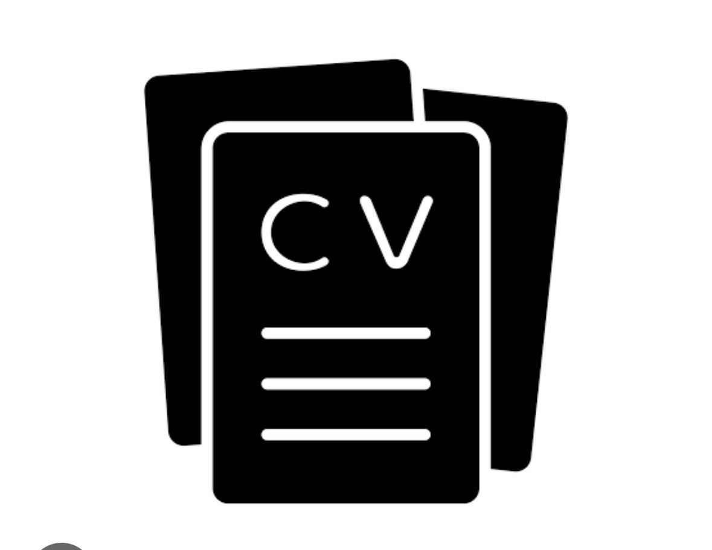
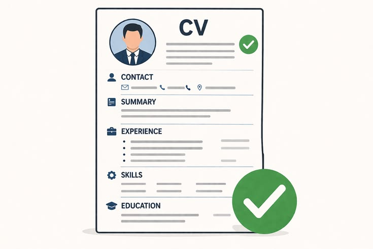

ابني مستقبلك المهني بذكاء وبخطوات ثابتة
منصة متكاملة لحديثي التخرج لمساعدتك في تحديد مسارك المفضل، اكتساب المهارات، وتجهيز الـ CV والإنترفيو.
ابدأ تحديد مسارك الآناستمارة تحديد المسار الوظيفي
ادخل بياناتك واهتماماتك للحصول على توصيات مخصصة لك:
دليل وكتابة السيرة الذاتية (CV)
كيف تبني سيرتك الذاتية الأولى باحترافية حتى لو لم تكن لديك خبرة سابقة
الهيكل الأساسي للـ CV
- البيانات الشخصية: الاسم، المسمى الوظيفي، رقم الهاتف، والبريد الإلكتروني الاحترافي.
- الملخص المهني (Summary): 2-3 أسطر توضح مهاراتك واهتماماتك الشغوفة بالوظيفة.
- المشاريع (Projects): أهم قسم لحديثي التخرج؛ اعرض مشاريع الكلية أو مشاريعك الشخصية.
- المهارات (Skills): قسم المهارات إلى تقنية (Technical) وشخصية (Soft Skills).
أخطاء شائعة تجنبها
- استخدام بريد إلكتروني غير رسمي (مثل أسماء المستعار).
- إدراج معلومات شخصية غير ضرورية (الحالة الاجتماعية، الديانة... إلخ).
- الأخطاء الإملائية؛ راجع النص جيداً قبل التصدير.
- زيادة عدد الصفحات عن صفحة واحدة فقط لحديثي التخرج.
✨ مثال جاهز لملخص الـ CV
اكتب تخصصك أو مهاراتك لإظهار نموذج ثابت يمكنك تعديله بنفسك:
حلّل سيرتك الذاتية
الصق نص السيرة واختر المجال للحصول على تقييم إرشادي. لا نستخدم API ولا نرسل النص إلى خادم.

استعدادات ومقابلات العمل (Interview Prep)
تدرّب على أشهر أسئلة مقابلات العمل وكيفية الإجابة عليها بثقة
❓ اتكلم عن نفسك؟ (Tell me about yourself)
الإجابة النموذجية: ابدأ برخص مختصر عن خلفيتك الأكاديمية، أهم المهارات والمشاريع اللي اشتغلت عليها، وليه مهتم بالفرصة دي بالذات (تجنب الحكي عن حياتك الشخصية).
❓ إيه هي نقاط ضعفك؟
الإجابة النموذجية: اذكر نقطة ضعف حقيقية لكن بتسعى لتحسينها حالياً (مثلاً: "كنت بتوتر في العروض التقديمية، وبدأت أتدرب وأمارس قدام زمايلي لتجاوز ده").
معرض الوسائط والنصائح السريعة
شاهد مقاطع قصيرة وصوراً توضيحية مُولّدة بالذكاء الاصطناعي لتبسيط رحلتك المهنية
كيف تجيب على سؤال "تحدث عن نفسك"؟
شرح سريع في 30 ثانية باستخدام متحدث افتراضي من HeyGen.

صورة توضيحيةكيف يكون الCV الاحترافي؟
تصميم مقارب تم استخراجه وتنسيقه بذكاء باستخدام ChatGPT & Midjourney.
محاكاة مقابلة عمل: الردود الصحيحة والخاطئة:
أهم الأسئلة في المقابلات وكيف تجيب عنها بالرد الصحيح والخطأ لتضمن قبولك في الشركات.
خريطةالمجالات
استكشف فيديوهات تعريفية سريعة ومصممة بالـ AI لأشهر المجالات المطلوبة
تصميم الواجهات (UI/UX)
البرمجة والتطوير (Programming)
التصميم الجرافيكي (Graphic Design)
جودة البرمجيات (Software QA)
الأسئلة الشائعة 🡻
إجابات سريعة على أهم الاستفسارات التي تدور في ذهن كل خريج جديد
كيف أعمل بورتفوليو احترافي وأنا ليس لدي خبرة سابقة؟
ركز على مشاريع الكلية، المشاريع الشخصية التي طبقتها أثناء التعلم، ومشاريع الـ Open Source. المهم عرض طريقة تفكيرك وجودة تنفيذك حتى لو لم تكن لوظيفة مدفوعة.
ما هو نظام الـ ATS؟
"نظام تتبع المتقدمين" ATS هو اختصار لـ Applicant Tracking System هو تطبيق برمجي أو نظام إلكتروني تستخدمه أقسام الموارد البشرية (HR) والشركات لإدارة عملية التوظيف واكتساب المواهب رقمياً. يعمل هذا النظام كقاعدة بيانات مركزية تستقبل السير الذاتية وطلبات التوظيف، ويقوم بفرزها وتحليلها تلقائياً لتسهيل مهمة مسؤولي التوظيف في اختيار الأنسب.
كيف أجد تدريب صيفي (Internship) يناسب مجالي؟
تابع منصات العمل مثل LinkedIn وWuzzuf باستمرار، واحرص على التواصل المباشر مع المسئولين عن التوظيف (HR) في الشركات المبتدئة، مع بناء حضور قوي يعرض مهاراتك.
هل الشهادات الأكاديمية أهم أم المشاريع التطبيقية؟
المشاريع التطبيقية والبورتفوليو هما الحاسم الأكبر في المجالات التقنية والتصميم، بينما تشكل الشهادات داعماً إضافياً لاثبات الاستمرارية والتعلم الشغوف.
كيف أصمم بورتفوليو (معرض أعمال) قوي إذا لم أعمل مع عملاء حقيقيين؟
قم ببناء مشاريع افتراضية تخدم مشاكل حقيقية، أو أعد تصميم وتطوير منتجات قائمة لتظهر قدرتك على التحليل والتنفيذ. الجودة وطريقة العرض أهم من عدد المشاريع.
كيف أتجاوز شرط الخبرة الوظيفية (1-2 سنة) المطلوبة لحديثي التخرج؟
ركز على صياغة مشاريعك الأكاديمية والشخصية في السيرة الذاتية بكفاءة عالية، فالشركات تبحث عن المهارة التطبيقية وإمكانية التعلم السريع وليس مجرد سنوات العمل الفعلي.
رأيكم يهمنا في Career Start
شاركونا تقييمكم للمنصة لمساعدتنا في تطويرها وتحديث الأدوات باستمرار